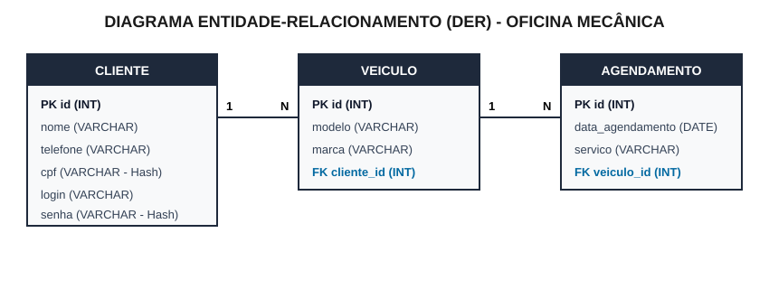

Sistema de Gestão para Oficina Mecânica (Python + FastAPI Comentado Linha por Linha)
Marque abaixo as entregas conforme for concluindo no seu treino para ver sua nota acumulada:
venv) e Instalando as Bibliotecas PreparaçãoAntes de criar o código do sistema, abra o terminal do VS Code (Ctrl + '), crie a pasta obrigatória sistema, crie o ambiente virtual e instale as bibliotecas necessárias:
# 1. Cria a pasta obrigatória chamada "sistema" e entra nela mkdir sistema cd sistema # 2. Cria o ambiente virtual isolado chamado "venv" python -m venv venv # 3. Ativa o ambiente virtual no Windows .\venv\Scripts\activate # 4. Instala as 3 bibliotecas necessárias para o FastAPI com Formulários HTML pip install fastapi uvicorn python-multipart
.\venv\Scripts\activate:Set-ExecutionPolicy -Scope Process -ExecutionPolicy Bypass
python -m venv venv: Cria um ambiente virtual Python isolado dentro da pasta venv. Assim as bibliotecas instaladas não entram em conflito com o restante do computador..\venv\Scripts\activate: Ativa o ambiente virtual (você verá (venv) verde no início da linha do terminal).fastapi: Framework Python usado para criar as rotas web (@app.get e @app.post).uvicorn: Servidor web que executa a aplicação FastAPI localmente na porta 8000.python-multipart: Obrigatório! O FastAPI precisa dessa biblioteca para ler dados enviados por formulários HTML (<form method="post"> usando Form()). Sem ela, o envio de formulário falha!sqlite3 e hashlib: Não precisam ser instaladas com pip porque já vêm nativas dentro do próprio Python!documentacao.txt) Vale 3 PontosO caderno aceita .txt, .docx ou .pdf. Crie o arquivo documentacao.txt (fora da pasta sistema) com no mínimo 4 requisitos funcionais (Item 1.1) e a lista de infraestrutura (Item 1.2):
==================================================================== ANEXO 1 - DOCUMENTAÇÃO DE SOFTWARE (OFICINA MECÂNICA) ==================================================================== 1.1 REQUISITOS FUNCIONAIS DO SISTEMA (Mínimo de 4 requisitos) - RF01 (Autenticação e Sessão): O sistema deve permitir o login de usuários validando as credenciais no banco de dados, exibindo mensagem de erro em caso de falha e criando uma sessão autenticada com tempo de expiração. - RF02 (Funcionalidade Principal): O sistema deve exibir na tela principal o nome do usuário autenticado na sessão, disponibilizar links de acesso aos módulos "Cliente", "Veículo" e "Agendamento", e oferecer a opção de sair do sistema (logout). - RF03 (Gerenciamento de Clientes e LGPD): O sistema deve permitir cadastrar, listar, buscar por termo, editar e excluir clientes, garantindo que dados sensíveis (CPF e senha) sejam armazenados criptografados no banco de dados conforme a LGPD. - RF04 (Gerenciamento de Veículos): O sistema deve permitir o cadastro e a listagem de veículos, vinculando obrigatoriamente cada novo veículo a um cliente existente no banco de dados. - RF05 (Gerenciamento de Agendamentos): O sistema deve permitir cadastrar agendamentos de revisão, atualizar a data de um agendamento existente e listar todos os agendamentos ordenados por data, exibindo os dados completos do veículo e do seu respectivo cliente. 1.2 LISTA DE REQUISITOS DE INFRAESTRUTURA - Linguagem de Programação: Python 3 - Framework Web / Backend: FastAPI (executado via servidor ASGI Uvicorn) - Front-end: HTML5 (renderizado pelo próprio FastAPI) - Sistema Gerenciador de Banco de Dados (SGBD): MySQL / SQLite3 - Sistema Operacional: Windows 10 (ou equivalente) - Editor de Código / IDE: Visual Studio Code (VS Code)
Desenhe as 3 tabelas e exporte como imagem ou PDF (Item 1.3):

CLIENTE: Possui a chave primária id (PK) e armazena os dados do cliente proprietário, incluindo cpf e senha criptografados.CLIENTE (1) → (N) VEICULO: Um cliente pode ter vários veículos. Por isso a tabela VEICULO recebe a chave estrangeira cliente_id (FK).VEICULO (1) → (N) AGENDAMENTO: Um veículo pode ter vários agendamentos de serviço. Por isso a tabela AGENDAMENTO recebe a chave estrangeira veiculo_id (FK).oficina_db.sql) Vale 3 PontosCrie o arquivo oficina_db.sql respeitando as chaves estrangeiras (Item 2.1 — Peso 2) e inserindo 3 registros em cada tabela (Item 2.2 — Peso 1):
CREATE DATABASE IF NOT EXISTS oficina_db;
USE oficina_db;
-- 1. Tabela CLIENTE (CPF e Senha em SHA-256 conforme LGPD)
CREATE TABLE IF NOT EXISTS cliente (
id INT AUTO_INCREMENT PRIMARY KEY,
nome VARCHAR(100) NOT NULL,
telefone VARCHAR(20) NOT NULL,
cpf VARCHAR(64) NOT NULL,
login VARCHAR(50) NOT NULL,
senha VARCHAR(64) NOT NULL
);
-- 2. Tabela VEICULO (Com Chave Estrangeira para CLIENTE)
CREATE TABLE IF NOT EXISTS veiculo (
id INT AUTO_INCREMENT PRIMARY KEY,
modelo VARCHAR(100) NOT NULL,
marca VARCHAR(50) NOT NULL,
cliente_id INT NOT NULL,
FOREIGN KEY (cliente_id) REFERENCES cliente(id) ON DELETE CASCADE
);
-- 3. Tabela AGENDAMENTO (Com Chave Estrangeira para VEICULO)
CREATE TABLE IF NOT EXISTS agendamento (
id INT AUTO_INCREMENT PRIMARY KEY,
data_agendamento DATE NOT NULL,
servico VARCHAR(100) NOT NULL,
veiculo_id INT NOT NULL,
FOREIGN KEY (veiculo_id) REFERENCES veiculo(id) ON DELETE CASCADE
);
-- POPULAÇÃO INICIAL (3 registros por tabela - Senha '123' em SHA-256)
INSERT INTO cliente (nome, telefone, cpf, login, senha) VALUES
('Ana Silva', '11999990001', '2c624232cdd221771294dfbb310aca000a0df6ac8b66b696d90ef06fdefb64a3', 'ana', 'a665a45920422f9d417e4867efdc4fb8a04a1f3fff1fa07e998e86f7f7a27ae3'),
('Carlos Souza', '11999990002', '6b86b273ff34fce19d6b804eff5a3f5747ada4eaa22f1d49c01e52ddb7875b4b', 'carlos', 'a665a45920422f9d417e4867efdc4fb8a04a1f3fff1fa07e998e86f7f7a27ae3'),
('Mariana Costa', '11999990003', 'd4735e3a265e16eee03f59718b9b5d03019c07d8b6c51f90da3a666eec13ab35', 'mariana', 'a665a45920422f9d417e4867efdc4fb8a04a1f3fff1fa07e998e86f7f7a27ae3');
INSERT INTO veiculo (modelo, marca, cliente_id) VALUES
('Civic', 'Honda', 1),
('Corolla', 'Toyota', 2),
('Onix', 'Chevrolet', 3);
INSERT INTO agendamento (data_agendamento, servico, veiculo_id) VALUES
('2026-05-20', 'Troca de Óleo e Filtros', 1),
('2026-03-10', 'Alinhamento e Balanceamento', 2),
('2025-11-05', 'Revisão de Freios', 3);
id INT AUTO_INCREMENT PRIMARY KEY: Define o identificador único de cada linha e incrementa o número automaticamente (1, 2, 3...) a cada novo cadastro.VARCHAR(64) para cpf e senha: O algoritmo SHA-256 gera sempre um texto criptografado de 64 caracteres.FOREIGN KEY (cliente_id) REFERENCES cliente(id) ON DELETE CASCADE: Cria a chave estrangeira obrigatória (Item 2.1). O comando ON DELETE CASCADE garante que, se você excluir um cliente na tela do sistema, os veículos dele também sejam removidos sem dar erro de chave estrangeira!sistema/main.py Item 5.4 (3 Pontos)Dentro da pasta sistema, crie o arquivo main.py e cole o Bloco 1:
import hashlib
import sqlite3
from fastapi import FastAPI, Form, Request
from fastapi.responses import HTMLResponse, RedirectResponse
app = FastAPI()
# ITEM 5.4 (Peso 3): Criptografia de CPF e Senha (LGPD) em 2 linhas!
def criptografar(texto: str) -> str:
return hashlib.sha256(texto.encode("utf-8")).hexdigest()
def get_db():
conn = sqlite3.connect("oficina_db.sqlite")
conn.row_factory = sqlite3.Row
conn.execute("PRAGMA foreign_keys = ON")
return conn
def inicializar_banco():
conn = get_db()
conn.executescript("""
CREATE TABLE IF NOT EXISTS cliente (
id INTEGER PRIMARY KEY AUTOINCREMENT,
nome TEXT NOT NULL,
telefone TEXT NOT NULL,
cpf TEXT NOT NULL,
login TEXT NOT NULL,
senha TEXT NOT NULL
);
CREATE TABLE IF NOT EXISTS veiculo (
id INTEGER PRIMARY KEY AUTOINCREMENT,
modelo TEXT NOT NULL,
marca TEXT NOT NULL,
cliente_id INTEGER NOT NULL,
FOREIGN KEY (cliente_id) REFERENCES cliente(id) ON DELETE CASCADE
);
CREATE TABLE IF NOT EXISTS agendamento (
id INTEGER PRIMARY KEY AUTOINCREMENT,
data_agendamento TEXT NOT NULL,
servico TEXT NOT NULL,
veiculo_id INTEGER NOT NULL,
FOREIGN KEY (veiculo_id) REFERENCES veiculo(id) ON DELETE CASCADE
);
""")
if conn.execute("SELECT COUNT(*) FROM cliente").fetchone()[0] == 0:
senha_padrao = criptografar("123")
conn.executemany(
"INSERT INTO cliente (nome, telefone, cpf, login, senha) VALUES (?, ?, ?, ?, ?)",
[
("Ana Silva", "11999990001", criptografar("11111111111"), "ana", senha_padrao),
("Carlos Souza", "11999990002", criptografar("22222222222"), "carlos", senha_padrao),
("Mariana Costa", "11999990003", criptografar("33333333333"), "mariana", senha_padrao),
],
)
conn.executemany(
"INSERT INTO veiculo (modelo, marca, cliente_id) VALUES (?, ?, ?)",
[("Civic", "Honda", 1), ("Corolla", "Toyota", 2), ("Onix", "Chevrolet", 3)],
)
conn.executemany(
"INSERT INTO agendamento (data_agendamento, servico, veiculo_id) VALUES (?, ?, ?)",
[
("2026-05-20", "Troca de Óleo e Filtros", 1),
("2026-03-10", "Alinhamento e Balanceamento", 2),
("2025-11-05", "Revisão de Freios", 3),
],
)
conn.commit()
conn.close()
inicializar_banco()
from fastapi import FastAPI, Form, Request: Importa a classe principal FastAPI, o leitor de formulários Form e o objeto Request (para ler os cookies da sessão).HTMLResponse e RedirectResponse: Permitem que o FastAPI devolva páginas HTML diretamente e redirecione o usuário de uma rota para outra.hashlib.sha256(texto.encode("utf-8")).hexdigest(): Transforma qualquer senha ou CPF em um código criptografado irreversível de 64 caracteres. Só essa função garante os 3 pontos do Item 5.4 (LGPD)!conn.row_factory = sqlite3.Row: Faz o banco devolver resultados que podem ser lidos pelo nome da coluna (ex.: c['nome']) em vez de índices numéricos.inicializar_banco(): Cria o arquivo do banco e insere automaticamente os 3 registros de cada tabela se o banco estiver vazio. Assim o sistema nunca dá erro de "tabela não encontrada"!Atende aos itens 3.1 (autenticar e redirecionar), 3.2 (sessão com expiração max_age=1800) e 3.3 (mensagem de erro):
@app.get("/", response_class=HTMLResponse)
def tela_login(erro: str = ""):
msg_erro = f"<p style='color:red;'><b>{erro}</b></p>" if erro else ""
return f"""
<h2>Login - Oficina Mecânica</h2>
{msg_erro}
<form method="post" action="/login">
Login: <input name="login" required> <br><br>
Senha: <input type="password" name="senha" required> <br><br>
<button type="submit">Entrar</button>
</form>
<p><small>Dica de teste: Login <b>ana</b> | Senha <b>123</b></small></p>
"""
@app.post("/login")
def fazer_login(login: str = Form(), senha: str = Form()):
conn = get_db()
user = conn.execute(
"SELECT * FROM cliente WHERE login = ? AND senha = ?",
(login, criptografar(senha)),
).fetchone()
conn.close()
# Item 3.3: Validação caso haja falha de autenticação
if not user:
return RedirectResponse("/?erro=Login+ou+senha+invalidos!", status_code=303)
# Item 3.1 e 3.2: Redireciona e cria sessão com tempo de expiração (1800s = 30 min)
res = RedirectResponse("/principal", status_code=303)
res.set_cookie(key="usuario_sessao", value=user["nome"], max_age=1800)
return res
@app.get("/logout")
def logout():
# Item 4.2: Meio para sair do sistema
res = RedirectResponse("/", status_code=303)
res.delete_cookie("usuario_sessao")
return res
def tela_login(erro: str = ""): Se o usuário errar a senha, o sistema redireciona para /?erro=Login+ou+senha+invalidos! e exibe a mensagem em vermelho (Item 3.3 — Peso 2).(login, criptografar(senha)): Como a senha no banco está criptografada em SHA-256, criptografamos a senha digitada antes de comparar no SELECT.res.set_cookie(key="usuario_sessao", value=user["nome"], max_age=1800): Cria a sessão do usuário guardando o nome dele no cookie e define a expiração para 1800 segundos (30 minutos). Essa única linha garante os 3 pontos do Item 3.2!status_code=303: Faz o navegador mudar de uma requisição POST (envio de formulário) para uma requisição GET (abrir a página de destino).Atende aos itens 4.1 (exibe nome do usuário da sessão), 4.2 (sair do sistema) e 4.3 (acesso a Cliente, Veículo e Agendamento):
@app.get("/principal", response_class=HTMLResponse)
def tela_principal(request: Request):
usuario = request.cookies.get("usuario_sessao")
if not usuario:
return RedirectResponse("/?erro=Sessao+expirada.+Faca+login+novamente.", status_code=303)
return f"""
<h2>Sistema Oficina Mecânica - Tela Principal</h2>
<p>Usuário logado: <b>{usuario}</b> | <a href="/logout">Sair do Sistema</a></p>
<hr>
<h3>Menu de Funcionalidades (Item 4.3):</h3>
<ul>
<li><a href="/clientes">Gerenciar Clientes</a></li>
<li><a href="/veiculos">Gerenciar Veículos</a></li>
<li><a href="/agendamentos">Gerenciar Agendamentos</a></li>
</ul>
"""
usuario = request.cookies.get("usuario_sessao"): Recupera o nome do usuário autenticado na sessão e exibe na tela (Item 4.1 — Peso 2).if not usuario:: Se a sessão tiver expirado ou se alguém tentar acessar /principal sem logar, redireciona de volta para a tela de login.<a href="/logout">Sair do Sistema</a>: Chama a rota que apaga a sessão (Item 4.2 — Peso 1).Atende aos itens 5.1 (listar/excluir), 5.2 (busca por termo), 5.3 (inserir novo cliente), 5.4 (criptografar CPF e senha) e 5.5 (editar cliente):
@app.get("/clientes", response_class=HTMLResponse)
def listar_clientes(busca: str = ""):
conn = get_db()
if busca:
clientes = conn.execute("SELECT * FROM cliente WHERE nome LIKE ?", (f"%{busca}%",)).fetchall()
else:
clientes = conn.execute("SELECT * FROM cliente").fetchall()
conn.close()
linhas = ""
for c in clientes:
linhas += f"""
<tr>
<form method="post" action="/clientes/editar">
<td>{c['id']}<input type="hidden" name="id" value="{c['id']}"></td>
<td><input name="nome" value="{c['nome']}" required></td>
<td><input name="telefone" value="{c['telefone']}" required></td>
<td><input name="login" value="{c['login']}" required></td>
<td><small>{c['cpf'][:12]}...</small></td>
<td>
<button type="submit">Salvar Edição</button>
<a href="/clientes/excluir/{c['id']}">Excluir</a>
</td>
</form>
</tr>
"""
return f"""
<p><a href="/principal">Voltar para Principal</a></p>
<h2>Gerenciamento de Clientes</h2>
<h3>Novo Cliente</h3>
<form method="post" action="/clientes/criar">
Nome: <input name="nome" required>
Telefone: <input name="telefone" required>
CPF: <input name="cpf" required>
Login: <input name="login" required>
Senha: <input type="password" name="senha" required>
<button type="submit">Cadastrar Cliente</button>
</form>
<hr>
<form method="get" action="/clientes">
Buscar por nome: <input name="busca" value="{busca}">
<button type="submit">Buscar</button>
<a href="/clientes">Limpar</a>
</form>
<br>
<table border="1" cellpadding="5">
<tr><th>ID</th><th>Nome</th><th>Telefone</th><th>Login</th><th>CPF (Hash LGPD)</th><th>Ações</th></tr>
{linhas}
</table>
"""
@app.post("/clientes/criar")
def criar_cliente(nome: str = Form(), telefone: str = Form(), cpf: str = Form(), login: str = Form(), senha: str = Form()):
conn = get_db()
conn.execute(
"INSERT INTO cliente (nome, telefone, cpf, login, senha) VALUES (?, ?, ?, ?, ?)",
(nome, telefone, criptografar(cpf), login, criptografar(senha)),
)
conn.commit()
conn.close()
return RedirectResponse("/clientes", status_code=303)
@app.post("/clientes/editar")
def editar_cliente(id: int = Form(), nome: str = Form(), telefone: str = Form(), login: str = Form()):
conn = get_db()
conn.execute("UPDATE cliente SET nome = ?, telefone = ?, login = ? WHERE id = ?", (nome, telefone, login, id))
conn.commit()
conn.close()
return RedirectResponse("/clientes", status_code=303)
@app.get("/clientes/excluir/{id}")
def excluir_cliente(id: int):
conn = get_db()
conn.execute("DELETE FROM cliente WHERE id = ?", (id,))
conn.commit()
conn.close()
return RedirectResponse("/clientes", status_code=303)
SELECT * FROM cliente WHERE nome LIKE ? com f"%{busca}%": Os sinais de % permitem buscar qualquer parte do nome digitado pelo usuário (Item 5.2 — Peso 3)./clientes/editar): Cada linha da tabela já exibe os dados dentro de caixas <input> com um <input type="hidden" name="id">. Assim o aluno não precisa criar outra página só para editar: basta mudar o texto na própria linha e clicar em Salvar Edição (Item 5.5 — Peso 3).(nome, telefone, criptografar(cpf), login, criptografar(senha)): Garante que tanto o CPF quanto a senha sejam gravados criptografados no banco (Itens 5.3 e 5.4 — 5 pontos).Atende ao item 6.1 (inserir novo veículo associando-o a um cliente no banco de dados):
@app.get("/veiculos", response_class=HTMLResponse)
def listar_veiculos():
conn = get_db()
clientes = conn.execute("SELECT id, nome FROM cliente").fetchall()
veiculos = conn.execute("""
SELECT v.id, v.modelo, v.marca, c.nome AS cliente_nome
FROM veiculo v JOIN cliente c ON v.cliente_id = c.id
""").fetchall()
conn.close()
opcoes_cliente = "".join([f"<option value='{c['id']}'>{c['nome']}</option>" for c in clientes])
linhas = "".join([
f"<tr><td>{v['id']}</td><td>{v['modelo']}</td><td>{v['marca']}</td><td>{v['cliente_nome']}</td></tr>"
for v in veiculos
])
return f"""
<p><a href="/principal">Voltar para Principal</a></p>
<h2>Gerenciamento de Veículos</h2>
<h3>Novo Veículo</h3>
<form method="post" action="/veiculos/criar">
Modelo do Veículo: <input name="modelo" required>
Marca: <input name="marca" required>
Cliente: <select name="cliente_id" required>{opcoes_cliente}</select>
<button type="submit">Cadastrar Veículo</button>
</form>
<hr>
<table border="1" cellpadding="5">
<tr><th>ID</th><th>Modelo do Veículo</th><th>Marca</th><th>Cliente Associado</th></tr>
{linhas}
</table>
"""
@app.post("/veiculos/criar")
def criar_veiculo(modelo: str = Form(), marca: str = Form(), cliente_id: int = Form()):
conn = get_db()
conn.execute("INSERT INTO veiculo (modelo, marca, cliente_id) VALUES (?, ?, ?)", (modelo, marca, cliente_id))
conn.commit()
conn.close()
return RedirectResponse("/veiculos", status_code=303)
<select name="cliente_id" required>{opcoes_cliente}</select>: Cria um menu suspenso com todos os clientes do banco. O usuário escolhe pelo nome, mas o value='{c['id']}' envia o ID do cliente para a chave estrangeira cliente_id (Item 6.1 — Peso 3).FROM veiculo v JOIN cliente c ON v.cliente_id = c.id: Faz o cruzamento entre as tabelas veiculo e cliente para mostrar o nome do proprietário na tabela.Atende aos itens 7.1 (listar agendamentos ordenados por data trazendo dados do veículo e do cliente) e 7.2 (atualizar a data de um agendamento):
ORDER BY:ORDER BY strftime('%d', a.data_agendamento) ASCORDER BY strftime('%m', a.data_agendamento) ASCORDER BY strftime('%Y', a.data_agendamento) ASC
@app.get("/agendamentos", response_class=HTMLResponse)
def listar_agendamentos():
conn = get_db()
veiculos = conn.execute("SELECT id, modelo FROM veiculo").fetchall()
agendamentos = conn.execute("""
SELECT a.id, a.data_agendamento, a.servico,
v.modelo AS veiculo_modelo, v.marca AS veiculo_marca,
c.nome AS cliente_nome, c.telefone AS cliente_telefone
FROM agendamento a
JOIN veiculo v ON a.veiculo_id = v.id
JOIN cliente c ON v.cliente_id = c.id
ORDER BY a.data_agendamento ASC
""").fetchall()
conn.close()
opcoes_veiculo = "".join([f"<option value='{v['id']}'>{v['modelo']}</option>" for v in veiculos])
linhas = ""
for a in agendamentos:
linhas += f"""
<tr>
<td>{a['id']}</td>
<td>
<form method="post" action="/agendamentos/atualizar" style="margin:0;">
<input type="hidden" name="id" value="{a['id']}">
<input type="date" name="data_agendamento" value="{a['data_agendamento']}" required>
<button type="submit">Atualizar Data</button>
</form>
</td>
<td>{a['servico']}</td>
<td>{a['veiculo_modelo']} ({a['veiculo_marca']})</td>
<td>{a['cliente_nome']} - Tel: {a['cliente_telefone']}</td>
</tr>
"""
return f"""
<p><a href="/principal">Voltar para Principal</a></p>
<h2>Gerenciamento de Agendamentos</h2>
<h3>Novo Agendamento</h3>
<form method="post" action="/agendamentos/criar">
Data: <input type="date" name="data_agendamento" required>
Serviço: <input name="servico" required>
Veículo: <select name="veiculo_id" required>{opcoes_veiculo}</select>
<button type="submit">Agendar</button>
</form>
<hr>
<table border="1" cellpadding="5">
<tr><th>ID</th><th>Data (Ordenada)</th><th>Serviço</th><th>Dados do Veículo</th><th>Dados do Cliente</th></tr>
{linhas}
</table>
"""
@app.post("/agendamentos/criar")
def criar_agendamento(data_agendamento: str = Form(), servico: str = Form(), veiculo_id: int = Form()):
conn = get_db()
conn.execute(
"INSERT INTO agendamento (data_agendamento, servico, veiculo_id) VALUES (?, ?, ?)",
(data_agendamento, servico, veiculo_id),
)
conn.commit()
conn.close()
return RedirectResponse("/agendamentos", status_code=303)
@app.post("/agendamentos/atualizar")
def atualizar_data_agendamento(id: int = Form(), data_agendamento: str = Form()):
conn = get_db()
conn.execute("UPDATE agendamento SET data_agendamento = ? WHERE id = ?", (data_agendamento, id))
conn.commit()
conn.close()
return RedirectResponse("/agendamentos", status_code=303)
JOIN (JOIN veiculo e JOIN cliente): Busca os dados do agendamento, do veículo e do cliente em uma única consulta e ordena pela data com ORDER BY a.data_agendamento ASC (Item 7.1 — Peso 3)./agendamentos/atualizar): Cada linha possui um campo <input type="date"> e o botão Atualizar Data que executa o UPDATE da data no banco (Item 7.2 — Peso 2).Certifique-se de que o ambiente virtual (venv) está ativo dentro da pasta sistema e rode:
uvicorn main:app --reload
Depois acesse http://127.0.0.1:8000 no navegador e faça login com ana e senha 123.